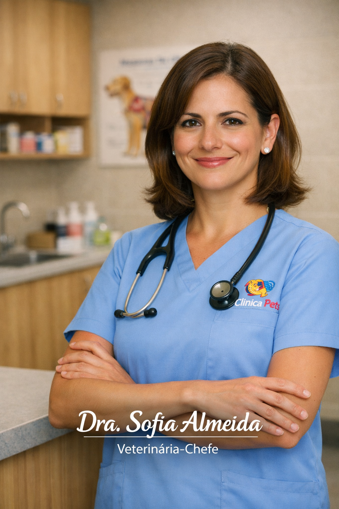
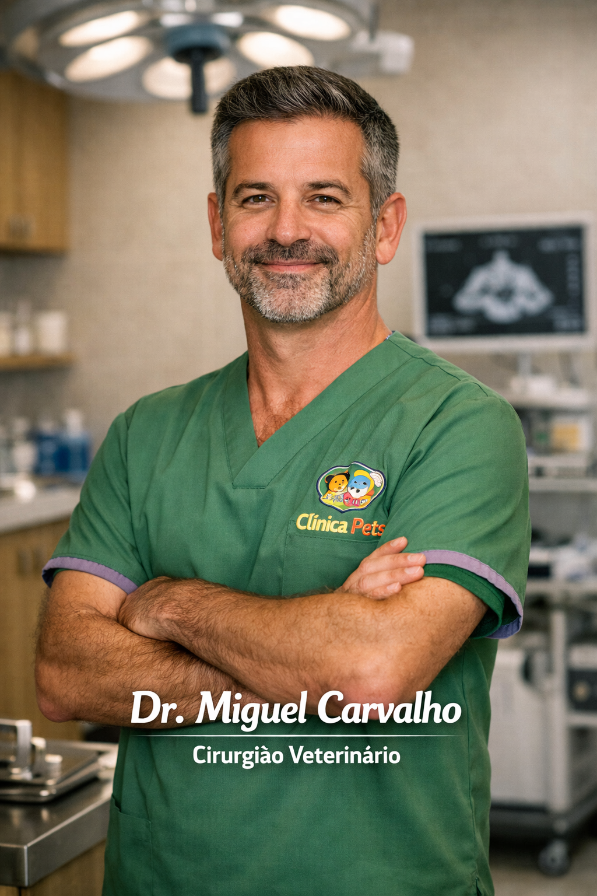

Corpo Clínico e Especialistas
Conheça os rostos por trás da excelência da Clínica Pets. Uma equipa multidisciplinar unida pela causa animal.
(Clique na foto para ampliar)
| Os Nossos Especialistas | |
|---|---|
|
 Dra. Sofia AlmeidaDiretora Clínica
|
 Dr. Miguel CarvalhoCirurgia e Ortopedia
|

Dra. Inês DuartePatologia e Diagnóstico
|

Carla MendesEstética Animal Profissional
|

João RibeiroGestão de Atendimento
|
|
| Especialistas comprometidos com a ética e o bem-estar animal. | |